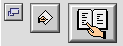
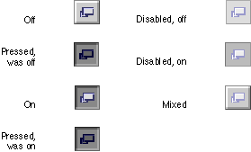

Bevel Buttons
A bevel button is a rectangular control with a beveled edge that gives the button a three-dimensional appearance. You can choose from among three widths of bevels--small, medium, and large--for any size button you create. The small bevel is two pixels wide; the medium bevel is three pixels wide; and the large bevel is four pixels wide. The size of the bevel determines the "height" of the button. Figure 2-10 shows the three bevel sizes.Figure 2-10 Bevel buttons with small, medium, and large bevels

A bevel can display text, an icon, or a picture. For bevel buttons that contain text, you can specify how the text is justified and aligned. For bevel buttons that contain both text and an image, you can also specify placement of the text in relation to the image. Bevel button text is aligned according to the system default script direction; if the system software displays text from right to left, the button text will be right-aligned. Bevel buttons containing both text and an image will place the image correctly according to the system default script direction if the image and text are on the same horizontal plane. For more information on laying out bevel buttons in dialog boxes, see "Bevel Button Layout" (page 70).
Bevel buttons can exist in seven states. There are five active states and two disabled. The active states are:
- off
- pressed (was off)
- on
- pressed (was on)
- mixed, for use when behaving as a checkbox or radio button.
Disabled bevel buttons can be shown as off or on.
- Note
- Under platinum appearance, both pressed states look the same, but this may change in future appearance themes.
Bevel button states are depicted in Figure 2-11.
Figure 2-11 Bevel button states

A bevel button mimics the behavior of other button types. You can attach a menu to a bevel button, in which case the bevel button takes on the behavior of a pop-up menu button. A bevel button can behave like a standard push button; in this case, the button pops back up after the user clicks on it. Bevel buttons can also behave in sets as radio buttons and as checkboxes.
Subtopics
- Bevel Buttons as Push Buttons
- Bevel Buttons as Radio Buttons
- Bevel Buttons as Checkboxes
- Bevel Buttons as Pop-up Buttons